관악산(관嶽山, 629.9m), 삼성산(455m)
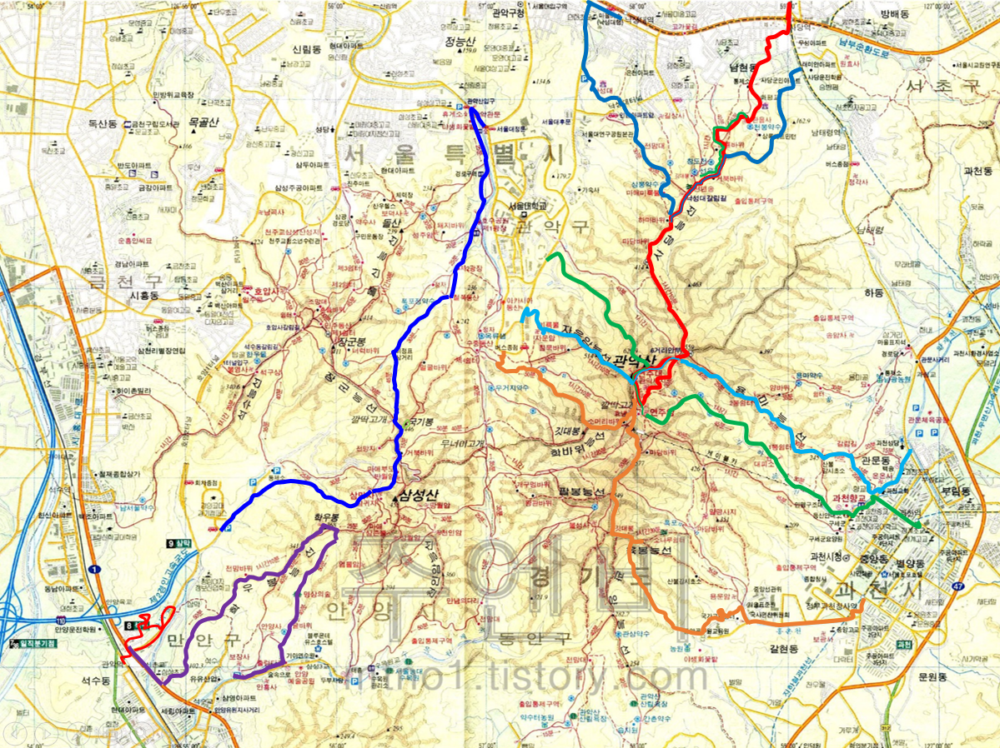
|
2020년
04월 09일 |
이수역, 사당역, 관음사, 전망대, 사당능선, 거북바위, 하마바위, 마당바위,
559m 헬기장, 6거리 안부, 연주암, 연주대/나한전, 한반도바위, 통천문(?), 6거리 안부,
사당 능선, 관음사 |
| 2020년 04월 18일 |
서울대 공동기기원, 수영장 능선, 탱크바위, 족발바위(?), 물개바위(?), 연주대/나한전,
연주암, 자하동천, 과천향교, 과천역 |
| 2020년 04월 24일 |
서울대 제1공학관, 자운암, 자운암능선, 기상대(?), 연주대/나한전, 통천문(?), 6거리 안부,
용마능선, 산불감시초소(?), 과천교회, 과천성당 6.57km, 5시간 52분 |
| 2020년 05월 03일 |
사당역 홈플러스, 사당군인아파트, 전망대, 낙성대 갈림길 일부, 하마바위, 봉천동 마애미륵불좌상,
낙성대터널 위, 낙성대공원, 인헌초등학교, 낙성대역 |
| 2020년 05월 08일 |
서울대 건설환경종합연구소, 계곡길, 학바위능선 방향, 소머리바위, 깔딱고개,
연주대 방향 조금 진행, KBS 송신소, 관양능선 일부, 팔봉능선 갈림길, 국기봉,
육봉능선 일부 진행, 희미한 길/계곡, 중앙공무원교육원 후문, 국사편찬위원회,
정부과천청사역 |
| 2020년 05월 21일 |
서울대 정문, 관악문, 호수공원, 제1광장, 제2광장, 철쭉동산, 이정표 삼거리,
장군능선 깔딱고개, 국기봉,(뒤돌아섬), 거북바위, 삼막사, 경인교대 |
| 2020년 05월 31일 |
한마음선원, 경수대로, 학우봉능선, 전망바위, 학우봉, 명상의숲, 안양예술공원, 버스정류장 5.51km, 3시간 29분 |
| 2020년 07월 5일 |
한마음선원, 삼막터널 근처, 한마음선원, 관악역 (호압사 가는 길 못 찾음) |
| 2020년 07월 15일 |
관음사, 전망대, 사당능선, 전망대, 관음사 (니오와이즈 혜성 관측 야간 산행) |
| 2020년 09월 27일 |
서울대 공동기기원, 수영장 능선, 탱크바위, 족발바위(?), 물개바위(?), 연주대/나한전,
연주암, 자하동천, 과천향교, 과천역 |
| 2021년 07월 12일 |
사당역 관악시장, 관음사 (서울들레길 스탬프), 천봉약수, 상록배드민턴, 홈플러스,
우면산 서울둘레길 스탬프, 샛길 하산 |
| 2021년 09월 05일 |
관문사거리, 송암사, 도당터, 397봉, 용마골 |
느낀 점, 배운 것
- 사당능선 전망대에서의 서울 시내 전경이 일품이다. 여의도 불꽃 놀이를 봐도 아주 멋지게 보일 듯 하다.
- 남태령 방향으로 수도방위사령부가 있다.
- 매우 크고 험한 산이다. 지금은 위험 구간에 계단이 많이 놓여졌다.
- 관악산 북쪽은 서울시 관악구이고, 남쪽은 경기도 과천시다. 삼성산 남서쪽은 안양시이다.
사당능선
| 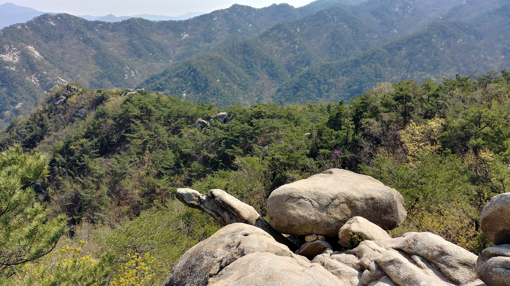 |  |
 |
|
|---|---|---|---|
| 거북바위 | 하마바위 | 목탁바위 미소짓는얼굴 |
천년송 |
관악산 정상 주변
| 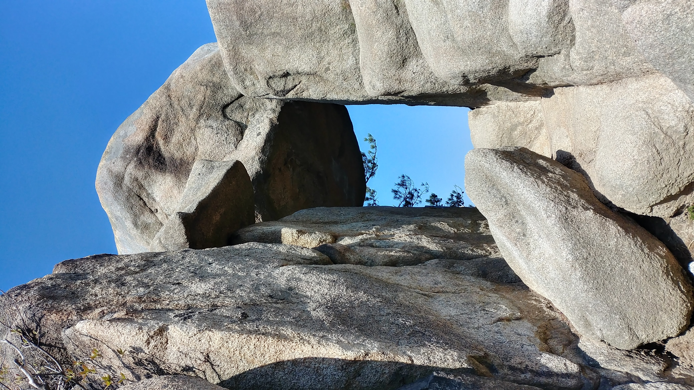 | 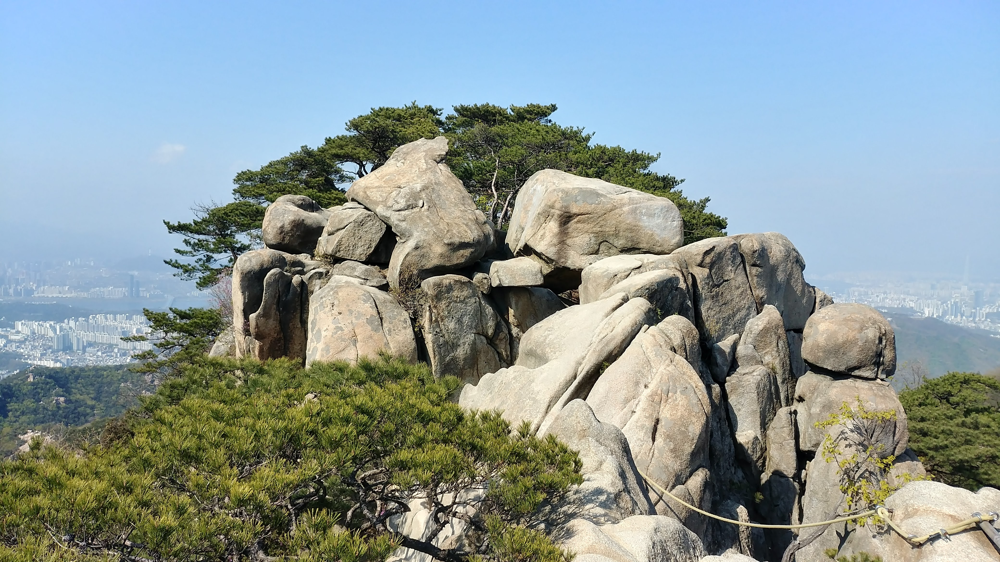 | 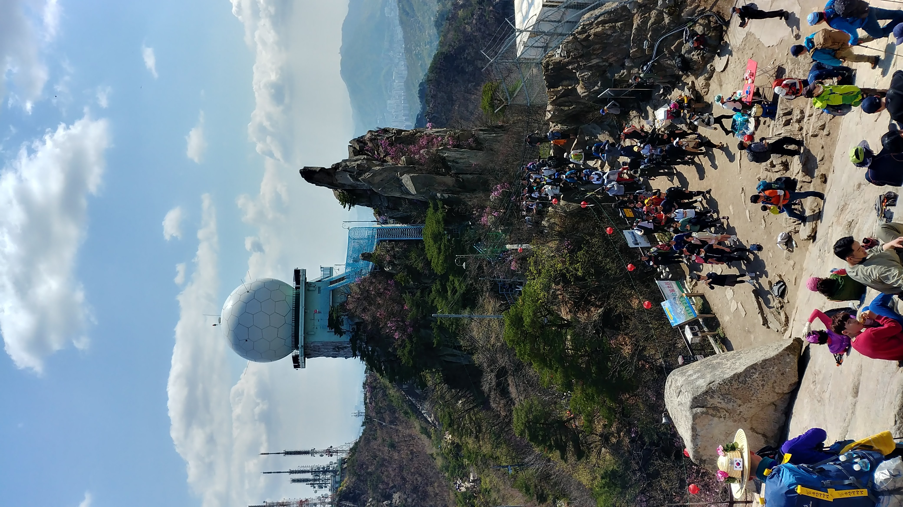 |  |
|---|---|---|---|
| 통천문 | 한반도 바위 | 불꽃 바위 | 연주대 |
| 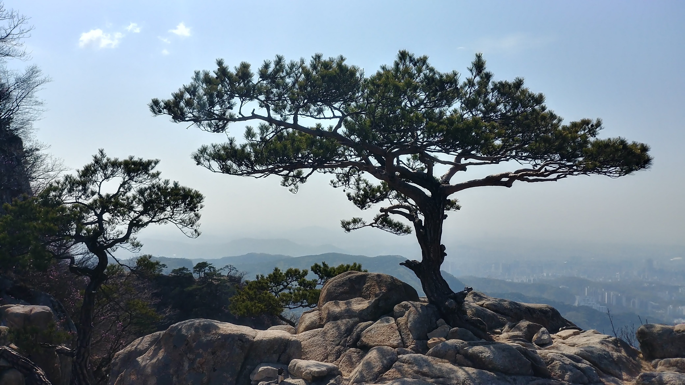 | 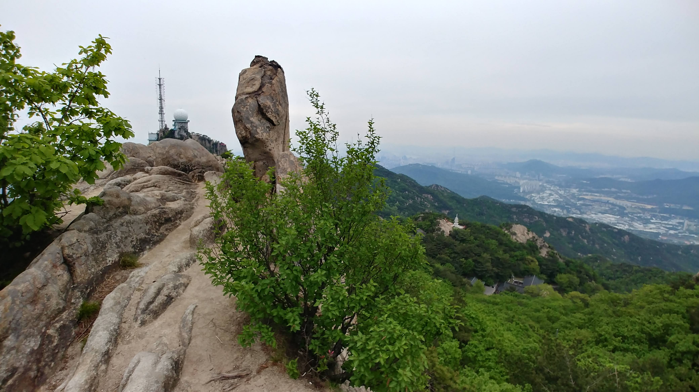 | 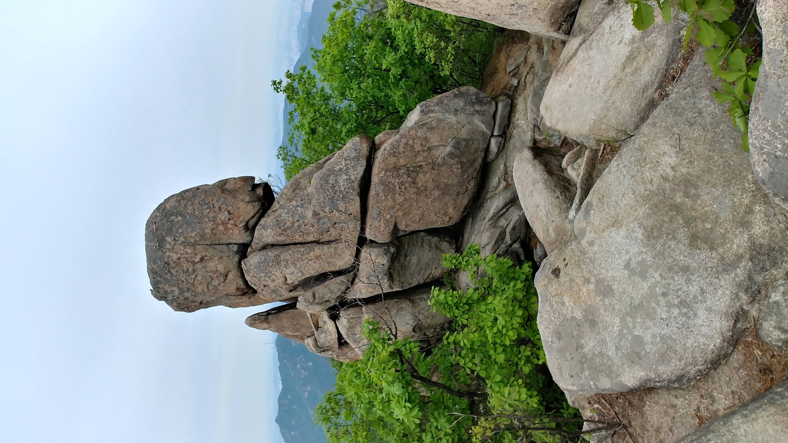 | |
| 소나무 | 소머리바위 | 부처상? | .. |
수영장 능선
|
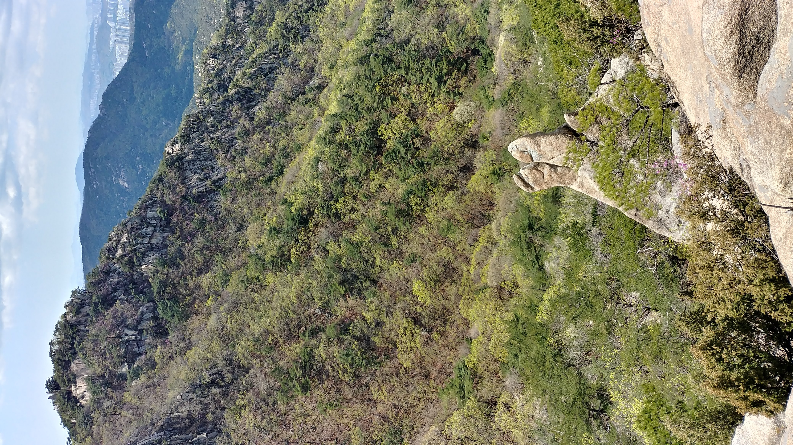 | 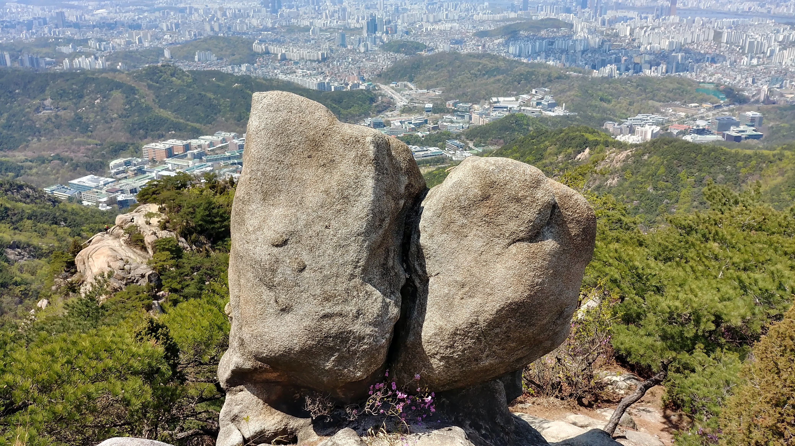 | |
|---|---|---|---|
| 탱크바위 군함바위 |
토끼바위 발바닥 바위 |
키스바위 | ... |
자운암 능선
| 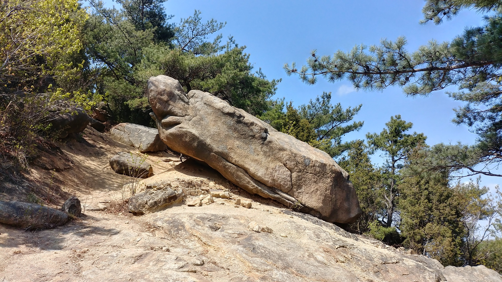 | 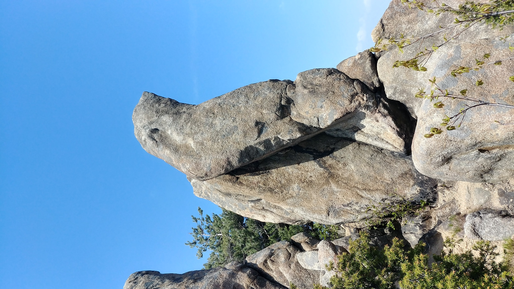 | |
|
|---|---|---|---|
| 자라바위? | 물개바위 | ... |
장군 능선
| 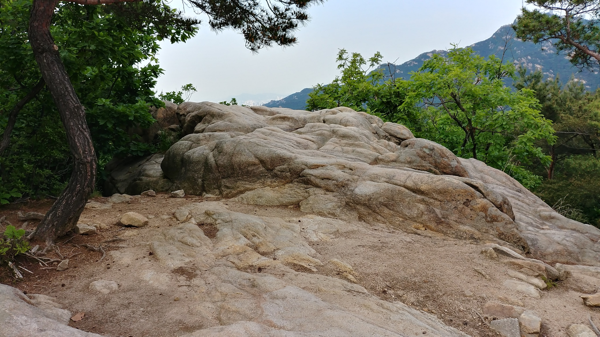 | |
|
|
|---|---|---|---|
| 거북바위 | ... | .. | ... |
연주대 남쪽 주능선 / 관양능선
|
|
|
|
|---|---|---|---|
| 관음(횃불)바위 | 장군바위 | 장미바위 | ... |
케이블카 능선
|
|
|
|
|---|---|---|---|
| 두꺼비바위 | 새바위 | ... | ... |